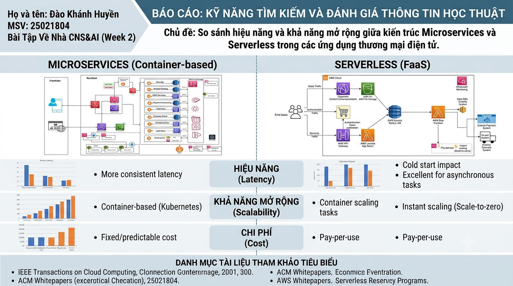

Chủ đề bài báo cáo là so sánh hiệu năng và khả năng mở rộng giữa kiến trúc Microservices và Serverless trong các ứng dụng thương mại điện tử.

Mục tiêu
- Biết sử dụng từ khóa và toán tử tìm kiếm nâng cao để thu hẹp phạm vi tài liệu.
- Đánh giá nguồn học thuật theo độ tin cậy, tính cập nhật và mức độ liên quan.
- Tổng hợp tài liệu để phục vụ báo cáo nghiên cứu.
Quá trình thực hiện
- Tìm kiếm tài liệu trên Google Scholar, IEEE, ACM và các whitepaper kỹ thuật.
- Lọc các nguồn liên quan đến latency, scalability, chi phí và mô hình triển khai.
- Lập bảng đánh giá nguồn, ghi chú điểm mạnh, hạn chế và mức độ phù hợp.
Kết quả nổi bật
Qua bài tập, tôi hiểu rõ hơn cách đọc tài liệu kỹ thuật, so sánh hai mô hình kiến trúc theo tiêu chí cụ thể và trình bày kết quả dưới dạng báo cáo trực quan. Sản phẩm cũng giúp tôi rèn luyện khả năng chọn lọc nguồn thay vì chỉ dựa vào những kết quả tìm kiếm đầu tiên.